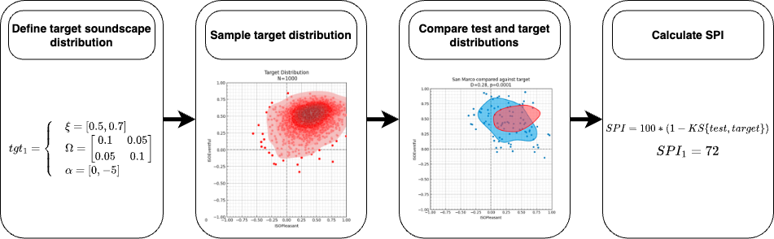

![]()

1 Introduction
The EU Green Paper on Future Noise Policy indicates that 80 million EU citizens are suffering from potentially harmful environmental noise levels, according to the World Health Organization (WHO) recommendations (Berglund, Lindvall, and Schwela 1999). The publication of the EU Directive Relating to the Assessment and Management of Environmental Noise (END) (European Union 2002) more than two decades ago has led to major actions across Europe, with reducing noise levels as their main focus, for which billions of Euros are being spent. However, it is widely recognised that solely reducing sound level in people’s living environments is not always feasible or cost-effective and, more importantly, with only 30% of environmental noise annoyance depending on physical aspects of the signal such as acoustic energy (Guski 1997), sound level reduction will not necessarily lead to improved quality of life. For this reason, from a public health point of view, it is necessary to explore alternative management and design strategies for acoustic environments that rely on more positive soundscapes, rather than merely environments not affected by noise pollution (Aletta, Oberman, and Kang 2018; Kang 2023; Kang et al. 2023).
Soundscape design, separate from (and complementary to) noise control engineering, is about the relationships between human physiology, perception, the sound environment, and its socio-cultural context (Kang 2006). Soundscape research represents a paradigm shift in that it combines physical, social, and psychological approaches and considers environmental sounds as a ‘resource’ rather than ‘waste’ (Kang and Schulte-Fortkamp 2016) relating to perceptual constructs rather than just physical phenomena. However, the current research is still at the stage of describing and identifying the problems and tends to be fragmented and focussed on only special cases e.g.~subjective evaluations of soundscapes for residential areas (Schulte-Fortkamp and Kang 2013; Chen and Kang 2023). In the movement from noise control to soundscape creation (Aletta and Kang 2015), a vital step is the standardisation of methods to assess soundscape quality.
A common aim for implementing soundscape assessment in practice is to compare the quality of different soundscapes. Often (but not always) the goal is to identify a ‘good’ soundscape compared to a ‘bad’ soundscape. However, this presents several challenges:
- What makes a soundscape good or bad is highly contextual; that is, the same acoustic environment may result in different appreciations and perceptual outcomes, depending on where/when it is happening, and what groups of individuals are there to experience it.
- On what metric should the quality rating be based? Previous attempts at defining objective metrics of “soundscape quality” assessment have fallen short of capturing the multidimensionality of people’s perception of surrounding acoustic environments.
- How can we deal with different requirements and definitions of how a soundscape should be perceived? Soundscape constructs are normally seen as highly individualised, while designing the soundscapes of public spaces should look at accommodating the needs of a given community of a space as a whole.
In many cases, the ultimate aim is to be able to rank soundscapes based on their quality. There is pressure from stakeholders and policymakers to move towards such simplified assessment protocols. However, any ranking metric should be flexible and be able to handle a variety of contexts and definitions of what a `good’ soundscape is for a given purpose. To address this, we will propose the Soundscape Perception Index (SPI) framework, a flexible method for defining single value indices of soundscape quality based on distributions within the Soundscape Circumplex Model (SCM) (Östen Axelsson, Nilsson, and Berglund 2012; Mitchell, Aletta, and Kang 2022; Ö. Axelsson, Nilsson, and Berglund 2010). As previously suggested, the primary motivation behind the development of the Soundscape Perception Indices (SPI) framework stems from the need to address the existing gap in quantifying and comparing soundscape quality across diverse contexts and applications. By creating a unified framework for defining these indices, the aim is to is to empower stakeholders, decision-makers, and researchers with the ability to create tailored indices that align with their specific objectives and design goals, while simultaneously enabling cross-comparisons and benchmarking against empirically-defined reference soundscapes. This dual approach not only acknowledges the context-dependent nature of soundscape perception but also fosters a common language and understanding, facilitating knowledge sharing and collaborative efforts within the field. This paper will demonstrate the SPI framework and test whether it is capable of both scoring soundscape quality and generating consistent rankings of soundscapes across different contexts.
2 Theoretical Background
In Aletta, Kang, and Axelsson (2016), the authors defined a framework for categorising the components of a soundscape assessment. They define three aspects: soundscape descriptors, soundscape indicators, and soundscape indices. Soundscape descriptors are defined as ‘measures of how people perceive the acoustic environment’ and soundscape indicators as ‘measures used to predict the value of a soundscape descriptor’. The relationship between soundscape indicator(s) and a soundscape descriptor effectively defines what has been previously referred to as a “predictive soundscape model” (Aletta, Kang, and Axelsson 2016; Mitchell 2022). There are primarily two rationales for modeling the relationship between the physical attributes and the perceived (i.e., soundscape) qualities of the acoustic environment. Firstly, a predictive model can forecast how individuals would perceive the acoustic environment, eliminating the need for labour-intensive surveys (Mitchell et al. 2023). Secondly, a precise predictive model may unveil the root causes of these perceived qualities, thereby serving as a valuable tool for design. Lionello, Aletta, and Kang (2020) provided a review of such models and concluded contextual features play an important role in increasing the quality of the model. Indices on the other hand, the primary focus of this article, are single numerical values that combine multiple indicators or descriptors to provide a comprehensive representation of the overall soundscape perception and allow for comparison between soundscapes.
The earliest and most commonly used scientific index measuring sound level is the Decibel (dB). To represent the overall level of sound with a single value on one scale, as the Decibel index does, is often desirable. For this purpose, a number of different values representing sounds at various frequencies must be combined. Several frequency weighting networks have been developed since the 1930s, considering typical human responses to sound based on equal-loudness-level contours (Fletcher and Munson 1933) and, among them, the A-weighting network, with resultant decibel values called dBA, has been commonly used in almost all the national/international regulations (Kryter 1994). However, there have been numerous criticisms on its effectiveness (Parmanen 2007) as the correlations between dBA and perceived sound quality (e.g.~noise annoyance) are often low (Hellman and Zwicker 1987).
Another set of indices is psychoacoustic magnitudes, including loudness, fluctuation strength or roughness, sharpness, and pitch strength, developed through sound quality studies of industrial products since the 1980’s (Zwicker and Fastl 2007). These emerged when it was conceived that acoustic emissions can be characterised beyond just sound level (Blauert and Jekosch 1997). But while psychoacoustic magnitudes have proven to be successful for the assessment of product sound quality, in the field of environmental acoustics, their applicability has been limited (Fastl 2006), since a significant feature of environmental acoustics is that there are multiple/dynamic sound sources. Additionally, while pyschoacoustic magnitudes incorporate perceptual aspects, both dB based and pyschoacoustic indicies are ultimately describing the acoustic signal and not the soundscape perception and may therefore be more accurately described as indicators rather than soundscape indices (Mitchell et al. 2023).
When applied to urban sound and specifically to noise pollution, the soundscape approach introduces three key considerations beyond traditional noise control methods:
- considering all aspects of the environment which may influence perception, not just the sound level and spectral content (e.g., visual setting, odour environment, spatial layout, etc.);
- an increased and integrated consideration of the varying impacts which different sound sources and sonic characteristics have on perception; and
- a consideration of both the positive and negative dimensions of soundscape perception.
This approach can enable better outcomes by identifying positive soundscapes (in line with the END’s mandate to “preserve environmental noise quality where it is good” (European Union 2002)), better identifying specific sources of noise which impact soundscape quality and pinpointing the characteristics which may need to be decreased, and illuminating alternative methods which could be introduced to improve a soundscape where a reduction of noise is impractical (Fiebig 2018; Kang and Aletta 2018). Factors such as the presence of natural or human-made sounds, their temporal patterns, and the overall contextual meaning ascribed to these sounds all contribute to the holistic perception of a soundscape.
2.1 Existing ‘Soundscape Indices’
While the field of soundscape research has witnessed substantial progress, the development of standardized indices for evaluating and comparing soundscapes across diverse contexts has been relatively limited. Existing indices can be broadly seen as arising from two domains: soundscape ecology and soundscape perception.
2.1.1 Soundscape Ecology and Bioacoustics
Within the realm of soundscape ecology, indices such as the Acoustic Diversity Index (ADI) and Frequency-dependent Acoustic Diversity Index (FADI) (Xu et al. 2023) have been developed to quantify the diversity and complexity of acoustic signals within a given soundscape. Similar indices (e.g. ADI, NDSI, ACI) have also been developed to analyse the acoustic signal of complex acoustic environments and indicate the richness and diversity of biophonic (natural) and anthrophonic (human-made) sound sources. However, while these indices contribute valuable insights into the ecological aspects of soundscapes, they do not directly address the perceptual dimensions that are central to the soundscape approach (Schulte-Fortkamp et al. 2023). The multi-dimensional nature of soundscape perception, encompassing factors such as pleasantness, eventfulness, and familiarity, necessitates a more comprehensive and context-sensitive approach.
2.1.2 Soundscape Perception
In the domain of soundscape perception, several indices have emerged as attempts to quantify the perceived quality of soundscapes, particularly in urban environments.
The Green Soundscape Index (GSI) (Kogan et al. 2018) incorporates factors such as the presence and levels of natural sounds and human-made sounds, and their respective contributions to the overall soundscape perception. The GSI is defined as the ratio of the perceived extent of natural sounds (PNS) to the perceived extent of traffic noise (PTN), ranging between 1/5 and 5. Subsequently, Cao and colleagues (Cao, Meng, and Kang 2020; Yang, Cao, and Meng 2022) proposed the Red Soundscape Index (RSI), defined as the ratio of the perceived extent of human sounds to the perceived extent of either natural sounds (RSI_n) or traffic sounds (RSI_t), arguing that the GSI alone was not suitable for all urban soundscape design applications.
Building on ecological diversity concepts, Liu et al. (2014) introduced the Soundscape Diversity Index (SDI), which quantifies the probability of two randomly selected sounds in a soundscape belonging to different categories, providing a measure of soundscape complexity. Expanding on this approach, Xiang et al. (2023) defined an expanded set of soundscape diversity indices, including the SDI, the Soundscape Richness Index (SRI), the Soundscape Dominance Index (SDO), and the Soundscape Evenness Index (SEI). These indices, adapted from species diversity measures in ecology, offer a more nuanced approach to quantifying aspects of soundscape perception. Xiang et al. (2023) demonstrated that these indices could be partially explained by existing acoustic indicators and were more suitable for evaluating urban green spaces than traditional acoustic indices.
Guo et al. (2023) proposed the Harmonious Degree of Sound Sources (SHD) index, which combines perceived loudness, occurrence, and preference for sound sources. The SHD assess how well the dominance of a sound aligns with visitors’ preferences, aiming to reflect the harmonious status of sounds in a soundscape.
In 2019, Kang et al. (2019) proposed the development of a set of soundscape indices (SSID) which might take the form SSID = f(\text{physical factors}) + f(\text{contextual factors}) + \ldots where the functions and weights of each aspect influencing soundscape perception (i.e. physical/acoustic parameters, contextual and visual factors, personal factors, etc.) could be derived statistically from a large dataset of soundscape surveys. The work presented here represents a development of this thinking which has grown out of the SSID project, where the analysis and indexing of perception data and the connection between soundscape indicators and perception have been separated (Mitchell et al. 2023). This modularization of perception prediction based on objective factors and soundscape index creation should enable more sophisticated and thoughtful index creation and more advanced and updateable prediction models.
While these indices offer valuable insights into specific aspects of soundscape perception, they are limited in their ability to capture the full multidimensionality of soundscape experienve across diverse contexts. The Soundscape Perception Index (SPI) framework presented in this paper builds upon these efforts by providing a flexible, context-sensitive approach to soundscape assessment. Unlike many previous indices, the SPI is not an analysis of an acoustic signal but rather is an index of perception based on soundscape descriptors. Furthermore, it does not represent a single target in a particular context, but is a generalisable, extensible, and adaptable framework for scoring soundscapes against any goal defined by the user.
The remainder of the paper will introduce and demonstrate this framework, providing a case study of defining an appropriate target.
3 Establishing the SPI Framework
The index framework, ‘Soundscape Perception Indices (SPI)’ introduced in this paper is defined here as the agreement between an observed or modelled soundscape perception distribution and a target soundscape perception distribution. Its goal is to determine whether a soundscape - whether it be a real-world location, a proposed design, or a hypothetical scenario - aligns with the desired (or reference) perception of that soundscape. This is achieved by first defining the target distribution, which could represent what is considered to be the ‘ideal’ soundscape perception for a given context or application. The test distribution is then compared to the target distribution using a distance metric, which quantifies the deviation between the two distributions. The resulting distance value serves as the basis for calculating the SPI, with smaller distances indicating a closer alignment between the perceived soundscape and the target soundscape perception.
We refer to this as an index framework rather than a single index, as the SPI can be tailored to specific contexts and applications by defining a range of target distributions. A single index is thus created for each target distribution. An SPI value therefore does not represent a ‘good’ or ‘bad’ soundscape, but rather a measure of how closely the perceived soundscape aligns with the desired target soundscape perception. This approach allows for the development of bespoke indices tailored to specific design goals and objectives, while also enabling cross-comparisons and benchmarking against empirically-defined reference soundscape targets.
3.1 Core Method
SPI is grounded in the soundscape circumplex model (SCM) (Ö. Axelsson, Nilsson, and Berglund 2010; Östen Axelsson, Nilsson, and Berglund 2012), a robust theoretical foundation for understanding and representing the multi-dimensional nature of soundscape perception. The reason for grounding the SPI in the soundscape circumplex is that we have observed this model to become the most prevalent assessment model in soundscape literature (Aletta and Torresin 2023). The SCM is built on a series of descriptors referred to as the Perceived Affective Quality (PAQ), proposed by (Ö. Axelsson, Nilsson, and Berglund 2010). These PAQs are based on the pleasantness-eventfulness paradigm adopted in research on emotions and environmental psychology (and its original version, conceptualized as valence-arousal paradigm), in particular Russell’s circumplex model of affect (Russell 1980). As summarised by Ö. Axelsson, Nilsson, and Berglund (2010): “Russell’s model identifies two dimensions related to the perceived pleasantness of environments and how activating or arousing the environment is.”
One benefit of the circumplex model is that, as a whole, it encapsulates several of the other proposed soundscape descriptors - in particular, annoyance, pleasantness, tranquillity, and possibly restorativeness (Aletta, Kang, and Axelsson 2016). According to Ö. Axelsson (2015), the two-dimensional circumplex model of perceived affective quality provides the most comprehensive information for soundscape assessment. It is also possible that the overall soundscape quality could itself be derived from the pleasant-eventful scores derived for a soundscape. The circumplex also lends itself well to questionnaire-based methods of data collection, as proposed in ISO/TS 12913-2:2018 (2018). In contrast to methods such as soundwalks, interviews, and lab experiments, questionnaires are able to provide the quality and amount of data which is necessary for statistical modelling. Combined, these factors make the circumplex most appropriate for a single index as it provides a comprehensive summary of soundscape perception.
There are four steps involved in calculating the SPI, as shown in Figure 1:
- Define and parameterise the target circumplex distribution;
- Sample the target distribution and prepare the test distribution;
- Compare test and target distributions using the distance metric (two-dimensional Kolmogorov-Smirnov distance D_{BKS});
- Calculate SPI = 100 * (1 - D_{BKS}).

These steps and their required background are discussed in detail in the following sections. Section 4.2.1 will then present strategies for defining targets and their applications. Throughout this paper, we use the data contained in the International Soundscape Database (ISD) (Mitchell et al. 2024), which includes 1300+ individual responses on the PAQ scales collected across 13 locations in London and Venice, according to the SSID Protocol (Mitchell et al. 2020).
3.2 Define and Parameterise a Soundscape Circumplex Distribution
To move the eight-item PAQ responses into the two-dimensional circumplex space, we use the projection method first presented in ISO/TS 12913-3:2018 (ISO/TS 12913-3:2019 2019). This projection method and its associated formulae were recently updated further in Aletta et al. (2024) to include a correction for the language in which the survey was conducted. Aletta et al. (2024) also provides adjusted angles for translations of the circumplex attributes to be used in calculating the P_{ISO} and E_{ISO} coordinates. Once the individual perceptual responses are projected into the circumplex space, the resulting data for each location is treated as a circumplex distribution. There are several advancements in considering circumplex distributions compared to the discussions originally given in Mitchell, Aletta, and Kang (2022) which are necessary for SPI. Before exploring the SPI method and target setting more specifically, we will first address these developments.
The circumplex is defined by two axes: P_{ISO} and E_{ISO}, which are limited to the range [-1, +1]. Typically, data in the soundscape circumplex is treated as a combination of two independent normal distributions, one for each axis (Mitchell, Aletta, and Kang 2022; Ooi et al. 2022). In some applications this approach is sufficient for capturing the distribution of soundscape perception, however defining a target distribution for SPI requires a more precise approach. The independent normal distribution approach relies on three key assumptions:
- The two axes are normally distributed.
- The two axes are symmetrically distributed.
- The two axes are independent of each other.
While the first assumption is generally valid, the second and third assumptions are not always met in practice. In particular, the distribution of soundscape perception responses in the circumplex is often characterised by a high degree of skewness, which can lead to inaccuracies in the calculation of the SPI. Soundscape circumplex distributions are most appropriately described as a bivariate skew-normal distribution (Adelchi Azzalini 2005) which accurately reflects the relationship between the two dimensions of the circumplex and the fact that real-world perceptual distributions have been consistently observed to not be strictly symmetric.
The skew-normal distribution is defined by three parameters: location (\mu), scale (\sigma), and shape (\alpha). The location parameter defines the centre of the distribution, the scale parameter defines the spread of the distribution and the shape parameter defines the skew of the distribution. The one-dimensional skew-normal distribution is defined as (A. Azzalini and Valle 1996):
\phi(z; \alpha) = 2 \phi(z) \Phi(\alpha z) \quad \text{for} \quad z \in \mathbb{R}
where \phi and \Phi are the standard normal probability density function and distribution function, respectively, and \alpha is a shape variable which regulates the skewness. The distribution reduces to a standard normal density when \alpha = 0. The bivariate skew-normal distribution extends this concept to two dimensions, allowing for the modelling of asymmetric and skewed distributions in a two-dimensional space such as the soundscape circumplex. The multivariate skew-normal (MSN) distribution including scale and location parameters is given by combining the normal density and distribution functions (A. Azzalini and Capitanio 1999):
Y = 2 \phi_k (y-\xi; \Omega) \Phi\{\alpha^T\omega^{-1}(y-\xi)\}
where \phi_k is the k-dimensional normal density with location \xi, shape \alpha, and covariance matrix \Omega. \Phi \{ \dot \} is the normal distribution function and \alpha is a k-dimensional shape vector. When \alpha = 0, Y reduces to the standard multivariate normal N_k(\xi, \Omega) density. A circumplex distribution can therefore be parameterised1 with a 2x2 covariance matrix \Omega, a 2x1 location vector \xi, and a 2x1 shape vector \alpha, written as:
Y \sim MSN (\xi, \Omega, \alpha)
By fitting an MSN distribution to empirical soundscape perception responses, it becomes possible to accurately capture the asymmetry and skewness of the distribution. A bivariate skew-normal distribution can be summarised as a set of these three parameters. Once parameterised, the distribution can then be sampled from to generate a synthetic distribution of soundscape perception responses.
Soundscape targets can thus be set by defining the desired MSN distribution. To demonstrate this, we will construct three arbitrary targets which will be used later to score three SPIs. The parameters chosen for the example targets are given in Table 1.
| Target | Location \xi | Covariance Matrix \Omega | Shape \alpha |
|---|---|---|---|
| \text{tgt}_1 | [0.5, 0.0] | \begin{bmatrix} 0.2 & 0.0 \\ 0.0 & 0.2 \end{bmatrix} | [1, 0] |
| \text{tgt}_2 | [1.0, -0.4] | \begin{bmatrix} 0.18 & -0.04 \\ -0.04 & 0.09 \end{bmatrix} | [-8, 1] |
| \text{tgt}_3 | [0.5, 0.7] | \begin{bmatrix} 0.1 & 0.05 \\ 0.05 & 0.1 \end{bmatrix} | [0, -5] |
3.3 Sample a Target Distribution
Once the parameters for an MSN are defined (i.e., the target), the MSN is then sampled using the sn package (A. Azzalini 2021) in R (R Core Team 2018). This is to prepare the target distribution to be compared with the empirical test distribution. Several restrictions to the possible parameter values apply, most importantly the covariance matrix \Omega must be a positive-definite matrix. In depth discussions of how these parameterizations should be defined and their restrictions can be found in Adelchi Azzalini (2016). Figure 2 shows the result of sampling (n=1000) the three example distributions given in Table 1 and plotting them as soundscape distributions.
3.4 Compare the target and test soundscape assessment distributions
Central to the SPI framework is the concept of a distance metric, which quantifies the deviation of a given soundscape from a desired target soundscape. This distance metric serves as the basis for calculating the SPI value, with smaller distances indicating a closer alignment between the perceived soundscape and the target soundscape perception. The distance between the test and target soundscape distributions is calculated using a two-dimensional Kolmogorov-Smirnov distance D_{BKS}} (Fasano and Franceschini 1987). The KS distance is a non-parametric metric of the equality of continuous distributions which is sensitive to both the location and shape of the distributions (Chakravati, Laha, and Roy 1967).
Essentially, we approach this as a problem of (dis)similarity between soundscapes. The D_{BKS} distance metric is then proposed to assess how similar any two given soundscapes distributions are within the circumplex. Taken to the extreme, two perfectly matching distributions in the soundscape circumplex would return a 100% SPI value, while two completely dissimilar distributions would return a 0% SPI value. In practical terms, for the former, this will never be achieved in real world scenarios; for the latter, it is also difficult to estimate how low the SPI value could actually go, and it should be considered that the distance may happen in different directions within the circumplex space. For instance, if a distribution for a vibrant soundscape was taken as a reference, a compared soundscape distribution may exhibit low SPI values for being located in the calm, OR monotonous, OR chaotic regions of the model.
Using the data from one location in the ISD (Piazza San Marco) as the test distribution, the D_{BKS} statistic is calculated for each of the target distributions defined above, shown in Table 2 and (fig?)–targets.
3.5 Calculate the SPI score
The final step is to convert D_{BKS} into a more interpretable form to use as a comparison across soundscapes. Since the KS distance is a measure of dissimilarity, we first subtract it from one to give a measure of similarity between the test distribution and the target distribution. This is then scaled to produce a score which ranges from 0 to 100, giving the final SPI formula:
\text{SPI} = 100 * (1 - D_{BKS}\{\text{MSN}_{test}, \text{MSN}_{tgt}\})
To show the usefulness of the test-target paradigm, we calculated the SPIs for each of the three target distributions for all the locations included in the ISD, as shown in Table 3. Since each location is now assigned an SPI, this makes it possible to effectively produce three separate rankings of soundscape quality for these locations, depending on which target is considered the goal.
4 Expanding the SPI framework
Section 3 has defined and demonstrated the foundational methodology for calculating an SPI score. This included how to: define and sample a target distribution; prepare the test and target distributions for comparison using the KS distance metric; and convert this into an SPI score. To expand this methodology into an applicable framework, we define two distinct types of targets: bespoke targets and reference targets, each serving a unique purpose in the index development process.
4.1 Bespoke Targets
Bespoke targets are essentially a direct application of the foundational method described above. Bespoke targets are tailor-made for specific projects, reflecting the desired soundscape perception for a particular application. These targets can be defined by stakeholders, designers, policymakers, or decision-makers based on their unique requirements, objectives, and constraints. This flexibility allows the SPI for a specific project to be tailored to the desire of the stakeholders for how that specific soundscape should function. It can also provide a consistent and quantifiable baseline for scenarios like a soundscape design contest wherein a target is specified and provided to all participants in the contest and the winning proposal is the design with the highest SPI score when assessed against that target. Stakeholders could use various methods to decide on a target, subject to the requirements of their project or use case. For example, it could be co-created with other stakeholders or space users, based on trying to match the soundscape of a previous project, or entirely arbitrary.
4.2 Reference Targets
In contrast to bespoke targets, reference targets represent generalized, widely recognized soundscape archetypes which transcend specific applications or projects. These archetypes serve as reference points and enable comparisons across different domains and use cases. Essentially a reference target is a target that has been empirically defined to encapsulate the ideal of a particular type of soundscape (e.g. for a park, for an urban square, for a particular group of users, etc.).
4.2.1 Deriving a target based on a priori rankings
Absent from the above methodology has been an exploration of how to actually arrive at a target based on empirical evidence; i.e., not a target specified ad hoc, but rather an “absolute” target, based on type of space, use case, or similar. While arbitrary targets make the SPI framework incredibly flexible, able to score against an effectively infinite set of design goals, often targets should have some sort of systematic foundation, especially when defining a Reference Target. To enable this approach, we therefore present one method of systematically deriving a target distribution based on a given ranking of soundscape quality. Just as one primary goal of the SPI framework is to enable soundscape rankings to be produced from SPI scores, this method allows for rankings which were arrived at separately to produce an optimised SPI target.
The core challenge in developing a reference SPI target is determining what constitutes an “ideal” soundscape perception distribution for a given context. While we can directly specify MSN parameters to create bespoke targets based on theoretical expectations or design goals, developing empirically-grounded reference targets requires a more systematic approach.
To enable this approach, we therefore present one method of systematically deriving a target distribution based on a given ranking of soundscape quality. The a priori ranking serves as a bridge between existing knowledge about soundscape quality and the mathematical framework of the SPI. By starting with a ranking of soundscapes whose relative quality has been assessed through some external measure, we can use optimization techniques to derive MSN parameters that:
- When used as an SPI target, produce scores that result in the same ranking order
- Generate high SPI scores for the highly-ranked soundscapes
- Define a distribution in the circumplex space that captures the perceptual characteristics common to high-quality soundscapes in this context.
This approach allows us to work backwards from known good (and poor) examples to define what the target distribution should look like. For instance, if we know that location A has a better soundscape than location B for our purposes, the optimal target distribution should result in location A receiving a higher SPI score than location B.
In this case study, we will examine a possible ranking from the ISD park locations produced by the authors (shown in Table 4).
| Rank | Location |
|---|---|
| 1 | RegentsParkJapan |
| 2 | RegentsParkFields |
| 3 | CampoPrincipe |
| 4 | MonumentoGaribaldi |
| 5 | RussellSq |
| 6 | MiradorSanNicolas |
| 7 | StPaulsCross |
| 8 | Noorderplantsoen |
Effectively, this is an optimisation task to determine the MSN parameters which best achieve the above goals. Parameter optimisation refers to the process of adjusting the parameters of a system, model, or algorithm to achieve the best possible performance according to one or more objectives. To set up the optimisation task, we first need to express the parameter space and any constraints. Since our goal is to identify an optimised soundscape target distribution, the parameters we will search over are:
- \xi = (\xi_x, \xi_y), -1 \leq \xi \leq 1
- \Omega = \begin{pmatrix} var(x) & cov(x, y) \\ cov(y, x) & var(y) \end{pmatrix}
- 0 \leq var() \leq 1
- -1 \leq cov() \leq 1
- \Omega must be symmetric and positive definite
- \alpha = (\alpha_x, \alpha_y), -5 \leq \alpha \leq 5
We then define the objective functions based on the two goals given above. For each step in the algorithm with a given trial set of parameters, a target distribution will be produced, the SPI for each test location assessed according to the protocol described in Section 3, and the resulting set of SPI scores and ranking will be scored using the objective functions. Goal (1) is assessed by calculating the Spearman rank correlation between the a priori ranking and the SPI ranking:
f_1 = r_{s}(R(\text{prior}), R(\text{target}))
Goal (2) is scored by calculating a weighted sum of the produced SPIs. To prioritise a target which provides high SPI scores for highly ranked soundscapes, we weight according to the ranking position:
f_2 = \sum_{i=1}^m \frac{1}{\text{rank}_i} \cdot SPI_i
where m is the number of included locations, SPI_i is the calculated SPI score for the i-th location assessed against a trial target, and \text{rank}_i is the calculated rank value of the i-th location.
Through our testing, optimising only on the rank correlation regularly produced targets which, while they did result in the desired ranking, were in no way representative of the soundscapes in question. We therefore aim to optimise for both a consistent soundscape ranking and for a high SPI score for the top-ranked soundscapes. Optimising these parameters with respect to multiple objectives ensures a more holistic approach to system improvement, acknowledging the trade-offs and interactions between different goals.
We apply the nondominated sorting genetic algorithm (NSGA-II) (Deb et al. 2002) to optimise our target distribution parameters. NSGA-II is a popular and efficient multi-objective evolutionary algorithm that is well-suited for problems with multiple, potentially conflicting objectives.
The algorithm works as follows2:
- Initialize a population of candidate solutions, each representing a set of target distribution parameters (\xi, \Omega, \alpha).
- Evaluate each candidate solution using the two objective functions defined above.
- Perform non-dominated sorting to rank the solutions based on Pareto dominance.
- Calculate crowding distance for each solution to maintain diversity in the population.
- Select parent solutions using tournament selection based on non-domination rank and crowding distance.
- Create offspring solutions using crossover and mutation operators, ensuring that the constraints on the parameters are maintained.
- Combine parent and offspring populations and select the best solutions to form the next generation.
- Repeat steps 2-7 for a specified number of generations or until a termination criterion is met.
The NSGA-II algorithm is implemented using the Python library pymoo v0.6.1.3 (Blank and Deb 2020). The population size is set to 150, and the algorithm runs for 100 generations. In pymoo, each objective function is supposed to be minimised, so when implementing the algorithm and in the results, -f_1 and -f_2 are used. After running the NSGA-II algorithm, we obtain a set of non-dominated solutions representing the Pareto front, shown in Figure 3 (a). Each solution on the Pareto front represents a trade-off between the two objectives: maximising the rank correlation (f_1) and maximising the weighted sum of SPI scores (f_2). The Pareto front allows us to visualise and analyse the range of possible solutions, from those that prioritise ranking consistency to those that emphasise high-SPI scores for top-ranked soundscapes.


For this demonstration, we opt for the second method, selecting the solution closest to the ideal point in the normalised objective space. This approach provides a balance between ranking consistency and high SPI scores for top-ranked soundscapes. Once the optimal solution is selected, we can sample from the MSN distribution and plot the derived target distribution, shown in Figure 3.
\textup{tgt}_{\textup{park}} \sim \left\{\begin{matrix} \xi&=&[0.694, 0.406] \\ \Omega&=&\begin{bmatrix} 0.157 & 0.040 \\ 0.040 & 0.255 \end{bmatrix} \\ \alpha&=&[5.054, -37.671] \end{matrix}\right.
The resulting \text{tgt}_{\text{park}}, with the MSN parameters given above, exhibits some expected characteristics: it is almost entirely pleasant, with a long uneventful tail into the calm quadrant, but somewhat unexpectedly the mode is slightly vibrant. What should be made clear about this demonstration is that we are not presenting this as a reference target to be used in the future - this section is meant as a demonstration of a method which can be used to derive a target from an a priori ranking. In this case, the a priori ranking was created by the authors from their experience of the locations in the ISD. To truly be called an empirical reference target, the ranking would need to be arrived at empirically, via some other metric (e.g. health or productivity ratings of the areas) or through an experiment such as paired-choice comparisons.
It is these reference targets with an empirical backing which would ideally form agreed upon standards and benchmarks in the field against which new soundscapes would be compared. The best methods for empirically determining the ideal soundscape distribution for a given context will no doubt remain a topic of debate and development in the coming years.
5 Discussion
The development of Bespoke and Reference context-dependent SPIs represents a significant step towards enabling more comprehensive and effective applications of the soundscape approach. By providing a unified framework for defining these indices, the potential for quantifying and comparing soundscape quality across diverse contexts and applications is unlocked, while still ensuring that the multi-dimensional and context-driven aspects of soundscape quality are considered.
5.1 Applications of the SPI framework
The proposed framework offers several key advantages. First, it acknowledges the inherent context-dependent nature of soundscape perception, allowing for the creation of indices tailored to specific use cases or design goals through the use of bespoke targets. This flexibility ensures that the resulting SPIs accurately capture the desired soundscape perception for the given application, enabling targeted interventions and optimisations.
Second, the inclusion of reference targets facilitates cross-comparisons and benchmarking, enabling a common language and understanding of soundscape quality across different domains. By calculating the distance between a given soundscape and these widely recognized references, stakeholders can identify areas for improvement and prioritize interventions accordingly, aligning their efforts with collectively recognized standards of desirable or undesirable soundscapes.
We expect that this would then expand into collections of SPI targets. As an example, imagine trying to define a soundscape perception index that could be applied across an entire city. A single index is insufficient, because each type of place within the city (e.g. parks, plazas, residential areas) has different requirements for its soundscape. Therefore, each place type would need its own soundscape target.
In this example, these sets of targets would correspond to different types of places within the city (e.g. a single target for parks, a target for plazas etc.). When applying this “urban typology” set of targets, the soundscape of each location being assessed would be scored against its relevant target (i.e how well does a specific park perform in comparison to a reference park target). This results in a single score for each location that can be compared against all other locations, regardless of whether or not they are the same type of place, allowing for different soundscapes to be compared on a common scale. This system ensures that context (in this case, the typology of a space) is brought into the assessment, allowing soundscapes to be scored against the most appropriate target. Enabling these context dependent assessments to be expressed on a common scale can facilitate additional use cases such as soundscape mapping, which requires a single scale to be applied across an entire city.
This set of targets made up of e.g. parks, plazas etc. is just one example of an application of reference SPIs. Other examples could include a demographics SPI, where different targets are set for respondents from different demographic groups, or a “use case” SPI with different targets set for different intended purposes of spaces (e.g. recreation, restoration, socialising). We encourage users of the SPI to define both their own single reference targets that can be added these suites of targets for use by others, and their own new sets of reference.
(Kogan et al. 2018, fig. 6), in fact displays a startlingly similar concept, showing the locations of the three categories of traffic noise dominance (‘traffic noise’, ‘balanced’, and ‘natural’) plotted in the circumplex perceptual model. It can be clearly seen in this plot that the GSI categories create their own clusters within the circumplex.
Although it is expected that the target distribution would usually represent the ideal or goal soundscape perception, it is also possible to define target distributions that represent undesirable or suboptimal soundscape perceptions. For instance, in a soundscape mapping context, it may be beneficial to map and identify chaotic soundscapes across a city in order to better target areas for soundscape interventions. In this case, the target distribution would be set in the chaotic quadrant and a higher SPI would indicate a closer alignment with the target distribution. This flexibility allows the SPI to be applied to a wide range of contexts and applications, enabling the quantification and comparison of soundscape quality across diverse scenarios.
5.2 Connecting with soundscape data
Unlike previous soundscape indices (see Section 2.1), SPI does not include any direct connection to soundscape indicators such as the sound level, spectral content, etc. Its basis in perceptual descriptor data effective allows the analysis and quantification of soundscape information to be modularised, separating the task of calculating a single index from the complex task of predicting soundscape perception from objective data. The modularisation of soundscape data analysis allows the entire pipeline from environmental data collection through to soundscape index scoring to remain flexible. Following the soundscape engineering paradigm laid out in Mitchell et al. (2023), the connection between soundscape indicators, through descriptors, to indices can be made by predictive soundscape models. These models are trained on increasingly large scale datasets and generally designed to predict soundscape descriptors, including the SCM attributes Hou et al. (2024). With the complex and multidimensional nature of soundscape perception and with the rapid progression in machine learning techniques and applications, an index framework should be able to integrate new and improved models. By separating the prediction of perceptual descriptors based on objective metrics from the calculation of the single value index itself, the SPI framework allows for these predictive models and for the creation of new indices to advance independently.
5.3 Comparison with existing soundscape indices
The SPI framework represents a unique approach to soundscape assessment, building upon and differentiating itself from previous indices in several key ways. Firstly, the SPI framework is fundamentally perception-focused. By referring to the “Soundscape Perception Index”, we aim to highlight the unique and perception-focussed nature of this index framework. The SPI core method operates entirely within the perception data space, with no direct reference to acoustic or other indicators. Perceptual data (or predicted perceptual data) are the only operant factors of the SPI method. The aim of SPI is to combine multidimensional perception data and context (including design goals) into a single metric.
The SPI framework shares this important characteristic with indices like the Soundscape Diversity Index (SDI) (Liu et al. 2014) and the Harmonious Degree of Sound Sources (SHD) (Guo et al. 2023) in that they all prioritize perception as the primary input for assessment. Both SDI and SHD, however, focus on the perception of sound sources that can be observed in an acoustic environment, and their relationships. While these indices offer valuable insights into specific aspects of soundscape perception, they are somewhat limited in their scope and adaptability. The SPI framework builds upon these efforts by incorporating the full dimensionality of the soundscape circumplex model and allowing for context-sensitive assessments through bespoke and reference targets. This approach enables the SPI to address a wider range of soundscape evaluation needs while maintaining the crucial focus on perceptual data that distinguishes these methods from purely acoustic measurements.
Furthermore, the SPI framework is designed to be generalisable, extensible, and adaptable. Unlike previous indices that often represent a single target in a particular context, the SPI framework allows for scoring soundscapes against any goal defined by the user. This flexibility makes it applicable across a wide range of contexts and design objectives, from urban planning and acoustic design to research and policy development.
5.4 Considerations and future work
Several considerations should be noted when defining an SPI target. First, the target distribution should be representative of the desired soundscape perception for the given application. This requires a clear understanding of the context, objectives, and constraints of the project, as well as the preferences and expectations of stakeholders and end-users. Second, the temporal and spatial scales of the target distribution should align with the soundscape assessment being conducted. What constitutes the actual spatial bounds of ‘a soundscape’, or indeed of ‘a place’, is a complex question which will depend on the context of the assessment. For example, a park soundscape may be defined by the boundaries of the park itself, or it may extend to include the surrounding urban environment or be restricted to a certain distance from a feature of interest in the park3. The temporal scale of the assessment is also important, as soundscape quality can vary throughout the day and across different seasons. Increasing the spatial bounds of what is considered the soundscape under examination (e.g. a single position vs a 25m^2 area vs an entire park) or extending the temporal scale will almost certainly result in a distribution with a larger variance. What scales are appropriate for a given assessment will depend on the context and objectives of the project, but they should be considered when defining the target distribution. Applying a target distribution that is too broad or too narrow for the context of the assessment may result in inaccurate or misleading SPI scores. As the circumplex distribution first described in Mitchell, Aletta, and Kang (2022) and further formalised here develops, we are hopeful that a better understanding of the relationship between temporal and spatial scales and the parameters of the distribution will emerge and will contribute to an increased understanding of what constitutes `the soundscape of a place’ and how this should be reflected in its ideal perception distribution.
Various other distance metrics were considered when developing the SPI method. The simplest method is to define a single point target, rather than a target distribution, and calculate a normalized mean Euclidean distance between points in the test distribution and the target point. While this is conceptually simple and requires defining only a single coordinate point as a target, rather than the MSN parameters described in Section 3.2, the shape and spread of a soundscape distribution is itself an important factor in describing the collective perception of a soundscape and would not be captured by this method (Mitchell, Aletta, and Kang 2022).
An additional method which was considered, was to consider a target as an ellipse (or, indeed any other shape) drawn in the circumplex space (similar to the simplified median decile curves proposed in Mitchell, Aletta, and Kang (2022)). An SPI score would then be calculated based on the percentage of responses which fall within the space defined by the ellipse. Again, this is conceptually quite simple and defining the ellipse targets is straightforward. However, this method has an important flaw - it is easy to artificially inflate or deflate the scores merely by changing the area of the ellipse. The larger the ellipse, the higher all SPI scores will be, regardless of whether the sample distribution is wide or narrow. This would also limit cross-comparability between targets. As can be seen in Table 3, defining a target distribution with a larger spread (i.e. \text{tgt}_1) does not automatically result in higher SPI scores across the board as it would with the ellipse target method. By defining the SPI as a true target-test distribution comparison we ensure that the SPI always accurately reflects the similarity between the perception of a soundscape and its target, both in terms of its location in the circumplex and the shape of the data.
As noted in Section 4.2.1, although a methodology for deriving targets is presented, the a priori ranking we use for the demonstration was not itself arrived at empirically. Hence the park target cannot be considered a true reference target. A key piece of future work is to use experimental methods such as paired-choice comparisons to arrive at a well-defined ranking which can then produce a true reference target.
6 Conclusion
The ERC-funded Soundscape Indices (SSID) project was started mostly with the ambition to derive soundscape indices that could serve as numerical/quantifiable tools (Kang et al. 2019), to better inform urban sound planning and design decisions. Any soundscape researcher having ever made an attempt at defining “the” soundscape quality index will know what a challenging, even impossible, task this is. Some may even argue that trying to reduce soundscape quality to a single-value quantity, and deriving any soundscape index, could be what philosophers would call a contradictio in adjecto, as the soundscape approach intrinsically advocates for a multi-dimensional characterization of the acoustic environments that we experience in our lives. For these reasons, we felt that it was necessary to take a step back and create instead a framework tailored for the field specifically that could easily be adapted to different contexts and capture the multi-faceted aspects of the soundscape of a place.
The proposed framework addresses the existing gap in quantifying multi-dimensional soundscape perception, facilitating a broader application of the soundscape approach in areas such as urban planning, environmental management, acoustic design, and policy development. Through the creation of bespoke indices tailored to specific design goals and the utilization of reference targets for benchmarking, this framework empowers stakeholders and decision-makers to make informed choices and prioritize soundscape improvements aligned with their unique objectives and constraints.
Furthermore, the grounding of the SPI framework in the soundscape circumplex model ensures a robust theoretical foundation, capturing the multi-dimensional nature of soundscape perception. The use of a distance metric enables quantitative assessments and comparisons, fostering a common language and understanding of soundscape quality across different domains. This shared understanding facilitates knowledge exchange, collaborative efforts, and the development of best practices within the field. As the SPI framework continues to be explored and refined, future research should focus on validating and expanding the range of reference targets, as well as investigating the potential for incorporating additional dimensions and factors that influence soundscape perception. The integration of emerging technologies (such as virtual, mixed, and augmented reality) may also provide new avenues for immersive soundscape evaluation and index development. Additionally, the application of the framework in diverse real-world scenarios, ranging from urban planning and environmental management to acoustic design and policy development, will provide valuable insights and contribute to the ongoing refinement and adaptation of the SPI framework.
In many ways, the proposed SPI framework is not so conceptually different from the whole idea of decibel-based set of indicators that the Soundscape Indices (SSID) project itself is trying to “overcome”. There is no such thing as a single noise indicator (L) to univocally describe sound levels in all circumstances; rather, different noise indicators are defined for different scenarios and temporal or spectral requirements (e.g., L_{den}, L_{Aeq, T}, etc.), based on testing needs. The decibel (dB) is the unit for all of them, but A-weighted equivalent sound levels for a one-hour interval cannot be directly compared with whole-day indicators with penalties. We are trying to achieve the same with the SPI to provide a way of defining different indices for different contexts, while maintaining a consistent framework.
Ultimately, for the SPI approach to succeed, collaboration with stakeholders, end-users, and experts from various domains will be crucial in ensuring the framework’s relevance and applicability across a wide range of contexts.
Acknowledgements
This project has received funding from the European Research Council (ERC) under the European Union’s Horizon 2020 research and innovation program (Grant No. 740696, project title Soundscape Indices - SSID). More information and related publications can be found at the CORDIS webpage of the project4
Data and Code Availability
The data used in this paper are drawn from the publicly available International Soundscape Database (ISD v1.0.1-alpha.1) Mitchell et al. (2024) available on Zenodo5. The code to recreate the figures in this paper can be found on this paper’s Github page6.
7 References
Aletta, Francesco, and Jian Kang. 2015. “Soundscape approach integrating noise mapping techniques: a case study in Brighton, UK.” Noise Mapping 2 (1): 1–12. https://doi.org/10.1515/noise-2015-0001.
Aletta, Francesco, Jian Kang, and Östen Axelsson. 2016. “Soundscape descriptors and a conceptual framework for developing predictive soundscape models.” Landscape and Urban Planning 149 (July): 65–74. https://doi.org/10.1016/j.landurbplan.2016.02.001.
Aletta, Francesco, Andrew Mitchell, Tin Oberman, Jian Kang, Sara Khelil, Tallal Abdel Karim Bouzir, Djihed Berkouk, et al. 2024. “Soundscape Descriptors in Eighteen Languages: Translation and Validation Through Listening Experiments.” Applied Acoustics. https://doi.org/https://doi.org/10.1016/j.apacoust.2024.110109.
Aletta, Francesco, Tin Oberman, and Jian Kang. 2018. “Associations between Positive Health-Related Effects and Soundscapes Perceptual Constructs : A Systematic Review.” International Journal of Environmental Research and Public Health 15 (October): 1–15. https://doi.org/10.3390/ijerph15112392.
Aletta, Francesco, and Simone Torresin. 2023. “Adoption of ISO/TS 12913-2:2018 Protocols for Data Collection from Individuals in Soundscape Studies: An Overview of the Literature.” Current Pollution Reports, October. https://doi.org/10.1007/s40726-023-00283-6.
Axelsson, Östen. 2015. “How to Measure Soundscape Quality.” In Proceedings of Euronoise 2015 :, 1477–81. Stockholm University, Perception; psychophysics; Nederlands Akoestisch Genootschap; ABAV - Belgian Acoustical Society.
Axelsson, Östen, Mats E. Nilsson, and Birgitta Berglund. 2010. “A principal components model of soundscape perception.” The Journal of the Acoustical Society of America 128 (5): 2836–46. https://doi.org/10.1121/1.3493436.
Axelsson, Östen, Mats E. Nilsson, and Birgitta Berglund. 2012. “The Swedish Soundscape-Quality Protocol.” In The Journal of the Acoustical Society of America, 131:3476–76. 4. Acoustical Society of America (ASA). https://doi.org/10.1121/1.4709112.
Azzalini, A. 2021. “The R package sn: The Skew-Normal and Related Distributions such as the Skew-t and the SUN.” Università degli Studi di Padova, Italia. https://cran.r-project.org/package=sn.
Azzalini, A., and A. Capitanio. 1999. “Statistical Applications of the Multivariate Skew Normal Distribution.” Journal of the Royal Statistical Society Series B: Statistical Methodology 61 (3): 579–602. https://doi.org/10.1111/1467-9868.00194.
Azzalini, Adelchi. 2005. “The Skew-Normal Distribution and Related Multivariate Families.” Scandinavian Journal of Statistics 32 (2): 159–88. https://doi.org/10.1111/j.1467-9469.2005.00426.x.
———. 2016. “How to Sample from the SN and Related Distributions When We Want to Fix Skewness and Other Cumulants.” http://azzalini.stat.unipd.it/SN/how_to_sample.pdf.
Azzalini, A., and A. Dalla Valle. 1996. “The Multivariate Skew-Normal Distribution.” Biometrika 83 (4): 715–26. http://www.jstor.org/stable/2337278.
Berglund, Birgitta, Thomas Lindvall, and Dietrich H. Schwela. 1999. “Guidelines for Community Noise.” Research report. World Health Organization; World Health Organization, Geneva.
Blank, J., and K. Deb. 2020. “Pymoo: Multi-Objective Optimization in Python.” IEEE Access 8: 89497–509.
Blauert, Jens, and Ute Jekosch. 1997. “Sound-Quality Evaluation a Multi-Layered Problem.” Acta Acustica United with Acustica 83 (5): 747–53. https://www.ingentaconnect.com/content/dav/aaua/1997/00000083/00000005/art00005.
Cao, Xinhao, Qi Meng, and Jian Kang. 2020. “Red Soundscape Index (RSI): An Index with the Potential to Assess Soundscape Quality.” In INTER-NOISE and NOISE-CON Congress and Conference Proceedings, 261:3527–39. 3. Institute of Noise Control Engineering.
Chakravati, Laha, and Roy. 1967. Handbook of Methods of Applied Statistics. Vol. 1. John Wiley; Sons.
Chen, Xiaochao, and Jian Kang. 2023. “Natural Sounds Can Encourage Social Interactions in Urban Parks.” Landscape and Urban Planning 239 (November): 104870. https://doi.org/10.1016/j.landurbplan.2023.104870.
Deb, Kalyanmoy, Amrit Pratap, Sameer Agarwal, and T. Meyarivan. 2002. “A Fast and Elitist Multiobjective Genetic Algorithm: NSGA-II.” Article. IEEE Transactions on Evolutionary Computation 6 (2): 182–97. https://doi.org/10.1109/4235.996017.
European Union. 2002. Directive 2002/49/EC of the European Parliament and of the Council of 25 June 2002 relating to the assessment and management of environmental noise.
Fasano, G., and A. Franceschini. 1987. “A Multidimensional Version of the Kolmogorov–Smirnov Test.” Monthly Notices of the Royal Astronomical Society 225 (1): 155–70. https://doi.org/10.1093/mnras/225.1.155.
Fastl, Hugo. 2006. “Psychoacoustic Basis of Sound Quality Evaluation and Sound Engineering.” In The Thirteenth International Congress on Sound and Vibration. Vienna.
Fiebig, André. 2018. “Does it make a difference to have soundscape standards ?” Proceedings - Euronoise 2018, no. June (June): 6. https://www.euronoise2018.eu/docs/papers/482_Euronoise2018.pdf.
Fletcher, Harvey, and W. A. Munson. 1933. “Loudness, Its Definition, Measurement and Calculation*.” Bell System Technical Journal 12 (4): 377–430. https://doi.org/10.1002/j.1538-7305.1933.tb00403.x.
Guo, Xuan, Jiang Liu, Zhu Chen, and Xin-Chen Hong. 2023. “Harmonious Degree of Sound Sources Influencing Visiting Experience in Kulangsu Scenic Area, China.” Forests 14 (1): 138. https://doi.org/10.3390/f14010138.
Guski, Rainer. 1997. “Psychological Methods for Evaluating Sound Quality and Assessing Acoustic Information.” Acta Acustica United with Acustica 83 (5): 765–74. https://www.ingentaconnect.com/content/dav/aaua/1997/00000083/00000005/art00007.
Hellman, Rhona, and Eberhard Zwicker. 1987. “Why Can a Decrease in dB(a) Produce an Increase in Loudness?” The Journal of the Acoustical Society of America 82 (5): 1700–1705. https://doi.org/10.1121/1.395162.
Hou, Yuanbo, Qiaoqiao Ren, Andrew Mitchell, Wenwu Wang, Jian Kang, Tony Belpaeme, and Dick Botteldooren. 2024. “Soundscape Captioning Using Sound Affective Quality Network and Large Language Model.” arXiv. https://doi.org/10.48550/ARXIV.2406.05914.
ISO/TS 12913-2:2018. 2018. “Acoustics – Soundscape – Part 2: Data Collection and Reporting Requirements.”
ISO/TS 12913-3:2019. 2019. “Acoustics – Soundscape – Part 3: Data Analysis.”
———. 2023. “Soundscape in City and Built Environment: Current Developments and Design Potentials.” City and Built Environment 1 (1): 1.
Kang, Jian, and Francesco Aletta. 2018. “The Impact and Outreach of Soundscape Research.” Environments 5 (5): 58. https://doi.org/10.3390/environments5050058.
Kang, Jian, Francesco Aletta, Tin Oberman, Mercede Erfanian, Magdalena Kachlicka, Matteo Lionello, and Andrew Mitchell. 2019. “Towards soundscape indices.” In Proceedings of the 23rd International Congress on Acoustics, integrating 4th EAA Euroregio 2019 : 9-13 September 2019:2488–95. Aachen: RWTH Aachen University. https://doi.org/10.18154/RWTH-CONV-239249.
Kang, Jian, Francesco Aletta, Tin Oberman, Andrew Mitchell, Mercede Erfanian, Huan Tong, Simone Torresin, Chunyang Xu, Tingting Yang, and Xiaochao Chen. 2023. “Supportive Soundscapes Are Crucial for Sustainable Environments.” Science of The Total Environment 855 (January): 158868. https://doi.org/10.1016/j.scitotenv.2022.158868.
Kang, Jian, and Brigitte Schulte-Fortkamp, eds. 2016. Soundscape and the Built Environment. Boca Raton, FL: CRC Press.
Kogan, Pablo, Jorge P. Arenas, Fernando Bermejo, María Hinalaf, and Bruno Turra. 2018. “A Green Soundscape Index (GSI): The potential of assessing the perceived balance between natural sound and traffic noise.” Science of The Total Environment 642 (November): 463–72. https://doi.org/10.1016/j.scitotenv.2018.06.023.
Kryter, Karl D. 1994. The Handbook of Hearing and the Effects of Noise. London, UK: Academic Press.
Lionello, Matteo, Francesco Aletta, and Jian Kang. 2020. “A systematic review of prediction models for the experience of urban soundscapes.” Applied Acoustics 170 (June). https://doi.org/10.1016/j.apacoust.2020.107479.
Liu, Jiang, Jian Kang, Holger Behm, and Tao Luo. 2014. “Effects of Landscape on Soundscape Perception: Soundwalks in City Parks.” Landscape and Urban Planning 123 (March): 30–40. https://doi.org/10.1016/j.landurbplan.2013.12.003.
Mitchell, Andrew. 2022. “Predictive Modelling of Complex Urban Soundscapes: Enabling an Engineering Approach to Soundscape Design.” PhD Thesis, University College London. https://doi.org/10.13140/RG.2.2.15590.50245.
Mitchell, Andrew, Francesco Aletta, and Jian Kang. 2022. “How to Analyse and Represent Quantitative Soundscape Data.” JASA Express Letters 2 (3): 037201. https://doi.org/10.1121/10.0009794.
Mitchell, Andrew, Francesco Aletta, Tin Oberman, Mercede Erfanian, and Jian Kang. 2023. “A Conceptual Framework for the Practical Use of Predictive Models and Soundscape Indices: Goals, Constraints, and Applications.” In INTER-NOISE 2023 Conference. Chiba, Greater Tokyo.
Mitchell, Andrew, Tin Oberman, Francesco Aletta, Mercede Erfanian, Magdalena Kachlicka, Matteo Lionello, Xiang Fang, and Jian Kang. 2024. “The International Soundscape Database: An integrated multimedia database of urban soundscape surveys – questionnaires with acoustical and contextual information.” Zenodo. https://doi.org/10.5281/zenodo.10672568.
Mitchell, Andrew, Tin Oberman, Francesco Aletta, Mercede Erfanian, Magdalena Kachlicka, Matteo Lionello, and Jian Kang. 2020. “The Soundscape Indices (SSID) Protocol: A Method for Urban Soundscape Surveys–Questionnaires with Acoustical and Contextual Information.” Applied Sciences 10 (7): 2397. https://doi.org/10.3390/app10072397.
Ooi, Kenneth, Karn N. Watcharasupat, Bhan Lam, Zhen-Ting Ong, and Woon-Seng Gan. 2022. “Probably Pleasant? A Neural-Probabilistic Approach to Automatic Masker Selection for Urban Soundscape Augmentation.” In ICASSP 2022 - 2022 IEEE International Conference on Acoustics, Speech and Signal Processing (ICASSP). IEEE. https://doi.org/10.1109/icassp43922.2022.9746897.
Parmanen, Juhani. 2007. “A-Weighted Sound Pressure Level as a Loudness/Annoyance Indicator for Environmental Sounds – Could It Be Improved?” Applied Acoustics 68 (1): 58–70. https://doi.org/10.1016/j.apacoust.2006.02.004.
R Core Team. 2018. R: A Language and Environment for Statistical Computing. Vienna, Austria: R Foundation for Statistical Computing. https://www.R-project.org/.
Russell, James A. 1980. “A Circumplex Model of Affect.” Journal of Personality and Social Psychology 39 (6): 1161. https://doi.org/10.1037/h0077714.
Schulte-Fortkamp, Brigitte, André Fiebig, Joseph A. Sisneros, Arthur N. Popper, and Richard R. Fay, eds. 2023. Soundscapes: Humans and Their Acoustic Environment. Springer International Publishing. https://doi.org/10.1007/978-3-031-22779-0.
Schulte-Fortkamp, Brigitte, and Jian Kang. 2013. “Introduction to the special issue on soundscapes.” The Journal of the Acoustical Society of America 134 (1): 765–66. https://doi.org/10.1121/1.4810760.
Xiang, Yi, Qi Meng, Xueyong Zhang, Mengmeng Li, Da Yang, and Yue Wu. 2023. “Soundscape diversity: Evaluation indices of the sound environment in urban green spaces–Effectiveness, role, and interpretation.” Ecological Indicators 154: 110725.
Xu, Zhi-yong, Lei Chen, Bryan C. Pijanowski, and Zhao Zhao. 2023. “A Frequency-Dependent Acoustic Diversity Index: A Revision to a Classic Acoustic Index for Soundscape Ecological Research.” Ecological Indicators 155 (November): 110940. https://doi.org/10.1016/j.ecolind.2023.110940.
Yang, Da, Xinhao Cao, and Qi Meng. 2022. “Effects of a Human Sound-Based Index on the Soundscapes of Urban Open Spaces.” Science of The Total Environment 802 (January): 149869. https://doi.org/10.1016/j.scitotenv.2021.149869.
Zwicker, Eberhard, and Hugo Fastl. 2007. Psychoacoustics: facts and models. Third ed. Berlin ; New York: Springer. https://doi.org/10.1007/978-3-540-68888-4.
Footnotes
It is important to note that the parameters which appear in the density expression (\xi, \Omega, \alpha) are what are called ‘direct parameters’ (DP). They directly parameterise an MSN density and are typically only estimated by fitting an MSN to a sample. The more familiar and interpretable components (mean, standard deviation, and skewness) are termed the centred parameters (CP). It is possible to move from one parameterization to another, however “while any choice of the DP components is admissible, the same is not true for CP”; i.e. we can always move DP \rightarrow CP but not always CP \rightarrow DP. In this context, it is most important for readers not to confuse the location parameter \xi with the sample mean \mu. A more complete explanation of these parameterizations can be found in Adelchi Azzalini (2016)↩︎
Further technical details of the multi-objective optimisation procedure and the relevant code can be found in the Supplementary Material.↩︎
For instance, the SSID Protocol, which produced the data used in this paper, attempted to address this by considering its spatial bounds for what constitutes one location to be “an ‘environmental unit’ wherein the environmental factors are consistent and is typically perceived to constitute a single distinct area”, noting that “the exact dimensions and delineation of the environmental unit will vary depending on the characteristics of the space” (Mitchell et al. 2020)↩︎
See https://cordis.europa.eu/project/id/740696/factsheet (Last viewed 2024-05-28).↩︎
See https://github.com/MitchellAcoustics/J2401_JASA_SSID-Single-Index↩︎
Reuse
Citation
BibTeX citation:
@article{mitchell2024,
author = {Mitchell, Andrew and Aletta, Francesco and Oberman, Tin and
Kang, Jian},
title = {Soundscape {Perception} {Indices} {(SPI):} {Developing}
Context-Dependent Single Value Scores of Multidimensional Soundscape
Perceptual Quality},
journal = {Journal of the Acoustical Society of America},
date = {2024-10-28},
url = {https://drandrewmitchell.com/research/papers/2024-10-30_JASA1112_SPI/},
langid = {en},
abstract = {The soundscape approach provides a basis for considering
the holistic perception of sound environments, in context. While
steady advancements have been made in methods for assessment and
analysis, a gap exists for comparing soundscapes and quantifying
improvements in the multi-dimensional perception of a soundscape. To
this end, there is a need for the creation of single value indices
to compare soundscape quality which incorporate context, aural
diversity, and specific design goals for a given application. Just
as a variety of decibel-based indices have been developed for
various purposes (e.g. \$L\_\{Aeq\}\$, \$L\_\{Ceq\}\$,
\$L\_\{90\}\$, \$L\_\{den\}\$, etc.), the soundscape approach
requires the ability to create novel indices for different uses,
which share a common language and understanding. We therefore
propose a unified framework for creating bespoke and reference
single index measures of soundscape perception, allowing for new
metrics to be defined in the future. This framework is based on a
four-step test-target paradigm wherein a desired soundscape
perception is defined as a target distribution within the soundscape
circumplex and the 2D Kolmogorov-Smirnov distance is used to test an
assessed soundscape against this target. Applications and
implications of this framework are discussed and a multi-objective
optimisation method for empirically defining perception indices is
proposed.}
}
For attribution, please cite this work as:
Mitchell, Andrew, Francesco Aletta, Tin Oberman, and Jian Kang. 2024.
“Soundscape Perception Indices (SPI): Developing Context-Dependent
Single Value Scores of Multidimensional Soundscape Perceptual Quality
.” Journal of the Acoustical Society of America,
October. https://drandrewmitchell.com/research/papers/2024-10-30_JASA1112_SPI/.